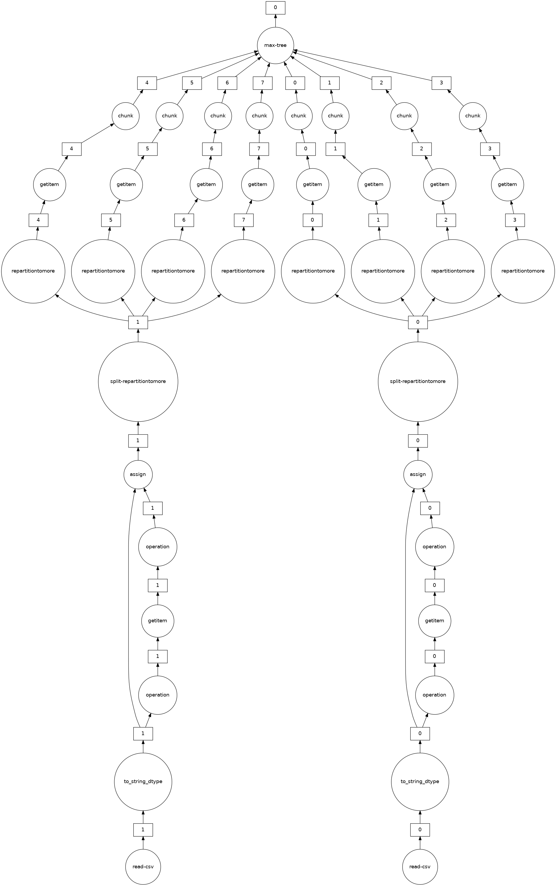

21 Lab: Dask 3, DataFrames
- Notebook:
code/dask/notebooks/Lecture3.ipynb(solutions:Lecture3_solutions.ipynb) - Data:
datasets/accounts_csv/,datasets/nycflights/,datasets/dimuon/(all undercode/dask/notebooks/) - Stack: same as Dask 1
- Theory: Dask; compare with Spark 2
- You will: load many CSVs as one DataFrame, fix wrongly inferred types, see which pandas operations are cheap and which are expensive when distributed, share work between computations, and redo the dimuon analysis in Dask
21.1 The idea behind it
- Horizontal partitioning of tables. A large table is split by rows into chunks that each fit in one worker’s memory; operations that work row-by-row or per-chunk parallelise perfectly, and operations that need a global view (sorting, global positions) don’t.
- The index as the partitioning key. Dask can track the min/max index of each partition (its divisions). With a sorted index, lookups and joins on it touch only the relevant partitions, while on any other column they need a shuffle. This is the same idea as partition pruning in Spark and sharding by key in NoSQL databases.
- Common sub-expression sharing: merging graphs (
dask.compute(a, b)) avoids recomputing shared steps, the same optimisation a SQL planner does.
21.2 What a Dask DataFrame is
A Dask DataFrame is many pandas DataFrames, the partitions, split along the index (row-wise, i.e. horizontal partitioning) and spread over the workers. Every operation you call is translated into the same pandas operation on each partition, plus whatever is needed to combine the results. The API is almost the pandas one, but the costs are different, and the lab is mostly about learning those costs.
21.3 Loading
In pandas, reading many files means a loop and pd.concat into one in-memory table. In Dask, a glob is enough:
import dask, dask.dataframe as dd
dask.config.set({'dataframe.query-planning': True}) # enable the query optimiser (default in recent Dask)
df = dd.read_csv('datasets/accounts_csv/accounts.*.csv')
len(df) # triggers work: len() of every partition, then a sum
df # structure only: columns, dtypes, npartitions
df = df.repartition(npartitions=8)By default you get roughly one partition per file, which is often not what you want. The number of partitions is your responsibility, as in Dask 2.
Unlike Spark, Dask DataFrames historically did no query optimisation: you got exactly the operations you wrote, in that order. The newer query planner adds some (e.g. pushing column selections and filters down), which is why the notebook makes sure it is on.
21.3.1 Type inference pitfall
Dask infers dtypes from a sample at the start of the data, then enforces them on all partitions. In nycflights, CRSElapsedTime and TailNum look like integers in the first rows but are not later, so head() works and tail() (a different partition) fails.
Fix it by stating the types:
df = dd.read_csv('datasets/nycflights/*.csv',
dtype={'TailNum': str, 'CRSElapsedTime': float})Alternatives are a larger sample= or assume_missing=True (treat integer columns as floats, so they may contain NaN), but explicit dtypes are the robust fix.
Building a date column from three columns also needs meta, which tells Dask the output type without computing anything:
df['Date'] = dd.to_datetime(df.rename(columns={'Year': 'year', 'Month': 'month', 'DayofMonth': 'day'})
[['year', 'month', 'day']],
meta=pd.Series(dtype="datetime64[ns]"))21.4 Cheap and expensive operations
Cheap (each partition works alone, then small results are combined):
df.DepDelay.max().compute()
df[df.UniqueCarrier == 'UA'].ArrDelay.mean().compute()
df.groupby(['Origin', 'Dest']).AirTime.max().compute()
df.groupby(['Origin', 'Dest'])['AirTime'].aggregate(['mean', 'std']).compute()
df.loc[df['Dest'] == 'DEN', ['UniqueCarrier']].compute()
max(): a max per partition, then a max of maxes.Group-by aggregations are still reasonably fast: partial aggregates per partition, then a combine. The result lands in one partition; if it is large, split_out= spreads it.
Not available or expensive:
| Operation | Why |
|---|---|
df.iloc[0:10] (row positions) |
raises: partitions don’t know their global row numbers. iloc[:, cols] (columns only) works |
set_index(col) |
needs a full sort of the data across workers |
sort_values, joins on a non-index column |
full shuffle |
df.compute() on everything |
brings all data to the client, so only after reducing it |
The typical workflow is therefore: bag to clean the raw input, Dask DataFrame to filter and reduce the bulk, then pandas (.compute()) on the small result for anything order-dependent or fiddly.
After an unavoidable expensive step, persist the result so later operations don’t repeat it:
ua_den = df[(df.UniqueCarrier == 'UA') & (df.Dest == 'DEN')].set_index('Date') # sort happens here
ua_den.ArrDelay.rolling('5D').mean().compute() # time-based rolling needs the datetime index21.6 Exercise: the dimuon spectrum in Dask
The same analysis as Spark 2, built from the Dask pieces. The JSON files are already in code/dask/notebooks/datasets/dimuon in the fork; the notebook’s instruction to copy them over from spark/ is only needed on a fresh upstream checkout.
Read and parse with a bag: each file is one JSON array of events, so parse and flatten:
events = db.read_text('datasets/dimuon/*.json', files_per_partition=4).map(json.loads).flatten()Events per sample with
foldby(count per key, as in Dask 2):events.foldby(key='sample', binop=lambda n, _: n + 1, initial=0, combine=add, combine_initial=0).compute()Muon multiplicity per sample:
filteronsample,pluck('nMuon'),compute(), histogram in matplotlib.Select and flatten to a DataFrame: two muons, opposite charge, then one flat dict per event:
df = (events.filter(lambda e: e['nMuon'] == 2) .filter(lambda e: e['Muons'][0]['charge'] == -e['Muons'][1]['charge']) .map(flatten_records) # {'sample', 'E1', 'px1', ..., 'pz2'} .to_dataframe())Features are plain pandas-style column arithmetic (lazy):
df['pT1'] = np.sqrt(df.px1**2 + df.py1**2); df['pT2'] = np.sqrt(df.px2**2 + df.py2**2) df = df[(df.pT1 > 15) & (df.pT2 > 15)] df['E'] = df.E1 + df.E2; df['Px'] = df.px1 + df.px2 # ... Py, Pz df['M'] = np.sqrt(df.E**2 - (df.Px**2 + df.Py**2 + df.Pz**2))Reduce, then go to pandas for plotting:
df[['sample', 'M', 'pT1', 'pT2']].compute().
Compared with Spark: no UDF machinery, since numpy works directly on the columns because every partition is a pandas DataFrame.
21.7 On a real cluster
- Use Parquet on object storage:
dd.read_parquet("s3://bucket/flights/", columns=[...], filters=[("Year", ">=", 2000)])reads only the needed columns and row groups, and the stored schema removes the dtype-inference problem entirely. - Set the index once (expensive) and save the result partitioned by it, so later jobs get the divisions for free.
- Size partitions to roughly 100 MB–1 GB in memory; check with
df.memory_usage_per_partition().compute(). Workers that run out of memory spill to disk and slow down dramatically. - The “bag → Dask DataFrame → pandas” pattern is how most Python data platforms are built: distributed tools for the heavy reduction, single-machine tools for the final, small result.
21.8 Wrap up
client.close(), then docker compose down.
- Dask DataFrame = row-wise partitions that are each a pandas DataFrame.
- State dtypes explicitly; inference only looks at the beginning of the data.
- Per-partition operations and group-by aggregations are cheap;
iloc,set_index, sorting and non-index joins are not. persistafter expensive steps; compute related results together withdask.compute(...).- Bag (clean) → Dask DataFrame (reduce) → pandas (finish).